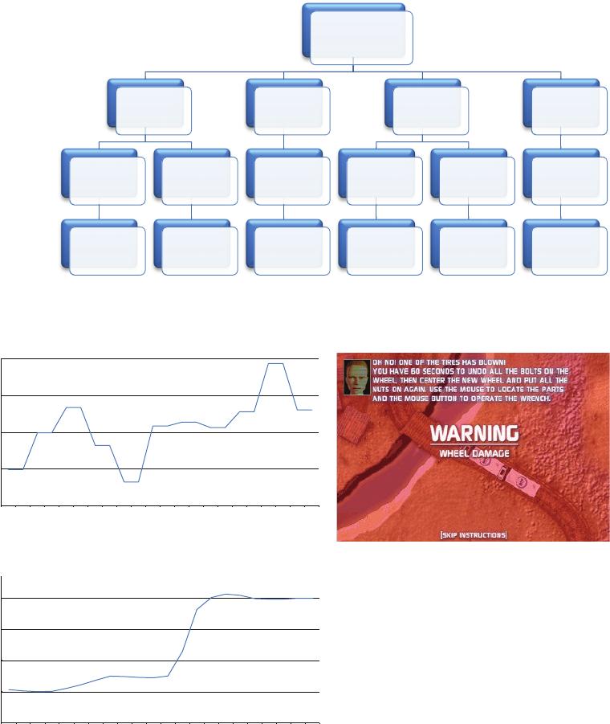
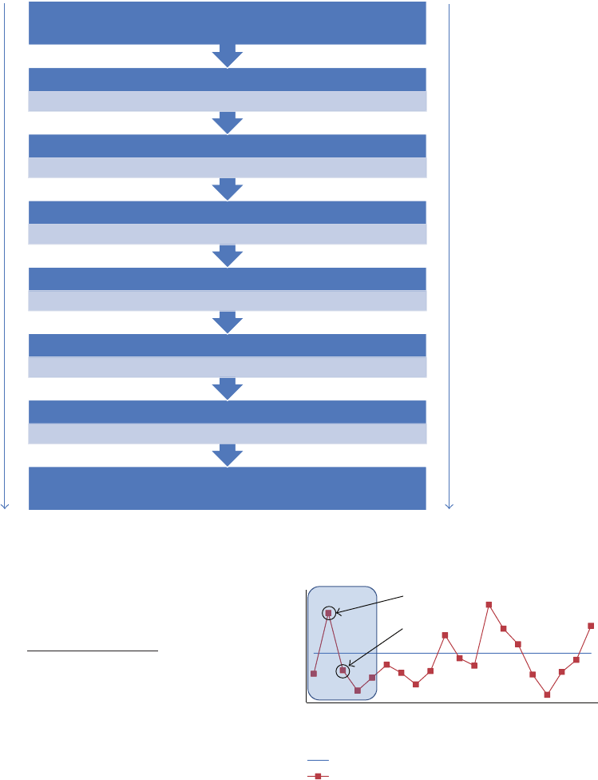
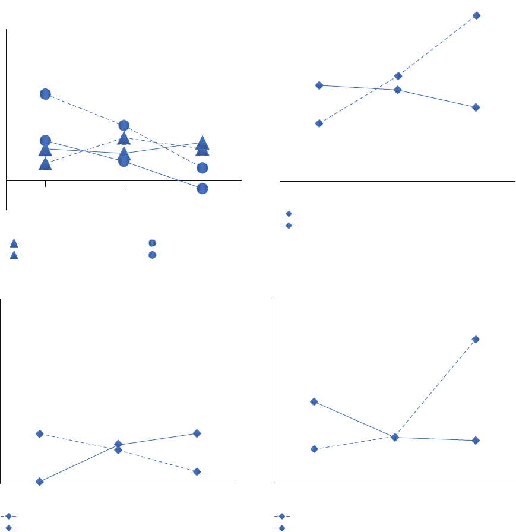
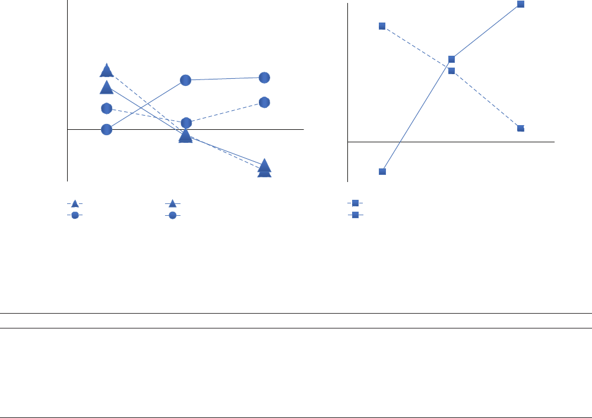

Hindawi Publishing Corporation
Advances in Human-Computer Interaction
Volume 2012, Article ID 624538, 15 pages
doi:10.1155/2012/624538
Research Article
Assessment of Learners’ Motivation during
Interactions with Serious Games: A Study of S ome
Motivational Strategies in Food-Force
Lotfi Derbali and Claude Frasson
D
´
eparteme nt d’Informatique et de Recherche Op
´
erationnelle, Universit
´
edeMontr
´
eal,
C.P. 6128, Succursale Centre-Ville, Montr
´
eal, QC, Canada H3C 3J7
Correspondence should be addressed to Lotfi Derbali, derbalil@iro.umontreal.ca
Received 9 April 2012; Revised 25 September 2012; Accepted 8 October 2012
Academic Editor: Francesco Bellotti
Copyright © 2012 L. Derbali and C. Frasson. This is an open access article distributed under the Creative Commons Attribution
License, which permits unrestricted use, distribution, and reproduction in any medium, provided the original work is properly
cited.
This study investigated motivational strategies and the assessment of learners’ motivation during serious gameplay. Identifying and
intelligently assessing the effects that these strategies may have on learners are particularly relevant for educational computer-based
systems. We proposed, therefore, t he use of physiological sensors, namely, heart rate, skin conductance, and electroencephalogram
(EEG), as well as a theoretical model of motivation (Keller’s ARCS model) to evaluate six motivational str ateg ies selected from
a serious game called Food-Force. Results from nonparametric tests and logistic regressions supported the hypothesis that
physiological patterns and their evolution are suitable tools to directly and reliably assess the effects of selected strategies on
learners’ motivation. They showed that specific EEG “attention ratio” was a significant predictor of learners’ motivation and could
relevantly evaluate motivational strategies, especially those associated with the Attention and Confidence categories of the ARCS
model of motivation. Serious games and intelligent systems can greatly benefit from using these results to enhance and adapt their
interventions.
1. Introduction
It is widely acknowledged that learners’ psychological and
cognitive states have an important role in intelligent systems
and serious games (SGs). For instance, engagement and
motivation or disaffection and boredom obviously affect
learners’ wills and skills in acquir ing new knowledge [1].
SGs cannot, therefore, ignore these states and should take
them into account during learning process. One important
learners’ state is motivation which plays a crucial role in
both the learners’ performance and the use of intelligent
systems over time [2]. Motivation is generally defined as that
which explains the direction and magnitude of behaviour,
or in other words, it explains what goals people choose to
pursue and how they pursue them [3]. It is considered as a
natural part of any learning process. Several researches have
showed that motivated learners are more likely to be more
engaged, to undertake challenging activities, and to exhibit
enhanced performance and outcomes [4, 5]. Therefore, it is
of particular relevance to study motivation and its role in
improving learners’ performance during gameplay.
Learners’ interactions with Intelligent Tutoring Systems
(ITSs) and especially SGs have always been considered to
be intrinsically motivating. One possible explanation is the
fact that ITSs generally use pictures, sounds, videos, and so
forth, that are considered, crudely, as motivational factors.
Intrinsic motivation is possibly gained through challenge,
curiosity, control, sensory stimuli, interaction, and fantasy
when using SGs [6, 7]. However, many researchers have
argued that learners’ negative emotions or amotivational
states such as boredom or disengagement have been known
to appear following a certain period of interaction with
computer systems. These states can be overwhelming to
learners and cause motivational problems and decrease
learning benefits [2, 8, 9]. Once learners’ psychological
and cognitive states are identified, intelligent systems are in
2 Advances in Human-Computer Interaction
a much better position to act upon them. In this perspective,
several studies have described intelligent systems that can
provide adapted emotional or cognitive strategies for coping
with, or at least reducing, the negative learners’ states [8–12].
Computer systems can also use motivational strategies which
are the actions (or tactics) taken in order to scaffold learners’
motivation toward tasks and goals of learning process and
to make learning easier, faster, more enjoyable, more self-
directed, and more effective. However, it is surprising to find
so little mention of the motivational strategies and relatively
little is known about coping with motivational problems,
which motivational str ateg ies should be used, and to what
extent they are employed. Within the researchers who have
tackled this issue, some have found that SGs seemed to show
a promising potential from a motivational standpoint. It has
been consistently shown that SGs have inherent motivational
properties and different strategies, al low ing them to be used
for improving educational applications [7, 13–15]. Game
designers, for example, employ a range of Artificial Intelli-
gence (AI) techniques (e.g., controlling the behaviour of the
nonplayer characters, providing performance feedback) to
promote long-term user engagement and motivation [16].
Moreover, evaluating systems interventions is obviously
related to differences in learners’ performance (successful
completion of tasks) or judgement (self-report question-
naires). However, by using only performance or judgement
in evaluating motivational stra tegies, intelligent systems risk
obtaining delayed or imperfect evaluations or interrupting
learning process by repeatedly using self-report question-
naires. This may offer misleading information regarding the
impact of motivational str a tegies on learners’ motivation.
Therefore, it is of particular relevance to investigate new ways
of evaluating motivational strategies. One promising way is
the use of physiological sensors. This is notably explained by
the significant results of recent studies involving physiolog-
ical sensors to assess motivational learners’ states as well as
emotional and cognitive systems strategies [10, 17–19].
The present paper examines the implication of different
physiological sensors to evaluate some motivational strate-
gies employed in SGs and to highlight the corresponding
learners’ patterns. To this end, we use an existing SG called
Food-Force presented by the United Nations World Food
Programme (WFP) and intended to learn players about the
fight against world hunger. The ultimate objective of this
intervention study is to assess learners’ motivation when
motivational strategies haves been used by SGs. We ask the
two following research questions: Can we empirically find
physiological patterns to evaluate the effects of motivational
strategies on learners’ motivation during interactions with
Food-Force? If so, Can these patterns feed AI models to
predict the level of learners’ motivation to the motivational
strategies? Hence, two hypotheses are postulated: (1) it is
possible to model learners’ physiological reactions and trends
towards motivational strategies in an SG environment and
(2) we can discriminate between effective and ineffective
motivational strategies using physiological manifestations
as well as self-report questionnaires. We designed an
experiment using an existing SG called Food-Force and
combined both the theoretical ARCS model of motivation
and empirical physiological sensors (heart rate (HR), skin
conductance (SC), and electroencephalogram (EEG)) to
assess the effects of motivational strategies on learners.
The organization of this paper is as follows. In the next
section, we present previous work related to our research.
In the third section, we explain our empirical approach
in assessing learners’ motivation. In the fourth section,
we describe the theoretical ARCS strategies to support
motivation and the studied st rategies in Food-Force. In the
fifth section, we detail our experimental methodology. In
the sixth section, we present the obtained results and discuss
them. Finally, we give a conclusion in the last section, as well
as present future work.
2. Related Research
Csikszentmihalyi [20] observed that people enter in a “flow”
state when they are fully absorbed in activity during which
they lose their sense of time and have feelings of great
satisfaction. Games generally catalyze conditions of flow state
by their clear goals, balance between challenges and skills,
immediate feedback, progress, and control. Furthermore,
Ryan and Deci [21] defined the Self-Determination Theory
(SDT) and distinguished between intrinsic motivation (to
understand the subject) and extrinsic motivation (for the
reward of a certificate or employment). They assumed that
the individual is normally inclined to be active, motivated,
curious, and eager to succeed. They also recognized that
some people mechanically perform their tasks, or even
people passive and unmotivated. They reported that environ-
ments that facilitate the satisfaction of psychological needs
can boost the internal dynamism of people to maximize their
motivation and to maximize results in personal development
and behavior. Ryan and colleagues [22] have studied the SDT
and stated that the motivational pull of computer games
is attributed to the combination of optimal challenge and
informational feedback. Bartle [23], one of the pioneers of
the massively multiplayer online games and known for his
work on the first MUD (An MUD (originally Multiuser
dungeon, with later variants Multiuser Dimension and
Multiuser Domain) is a computer program, usually ru nning
over the Internet, that allows multiple users to participate
in virtual-reality role-playing games.), distinguished several
motivational profiles among players: the killer (competitive-
ness), the per-former (success), the explorer (curiosity), and
socializer (cooperation). He reported that some players strive
to achieve all the challenges offered by the gameplay while
others seek the company of other players, or want to discover
the whole virtual world.
Nevertheless, the effectiveness of any study regarding the
assessment of learners’ motivational states depends on two
important factors: (1) the choice of proper assessment tools
and (2) the accuracy of the selected tools. For example,
Schunk et al. [5] used Keller’s ARCS model (see next section
for a description of this model) and proposed several rules to
infer motivational states from two sources: the interactions of
the students with the tutoring system and their motivational
traits. Some researchers have analyzed log files and have
established correlations between learners’ actions in log files
Advances in Human-Computer Interaction 3
and their motivational states (e.g., [24]). Other researchers
have used physiological sensors to assess learners’ motivation
and correlate physiological learners’ responses to some
dimensions of motivation such as attention and confidence
(e.g., [17, 25]). They have identified that the combination of
various physiological sensors may provide perfect measures
of learners’ states and consequently enhance systems inter-
vention strategies. They have involved a variety of sensors
to assess physiological learners’ states and responses to
stimuli in Computer-Based Education (CBE) environment:
mouse, electromyogram (EMG), respiration (RESP), HR,
SC, and more recently EEG. For instance, Conati [19]has
used biometric sensors (HR, SC, EMG, and RESP) and
facial expression analysis to develop a probabilistic model
of detecting students’ affective states within an educational
game. Arroyo and colleagues [26] have used four different
sensors (camera, mouse, chair, and wrist) in a multimedia
adaptive tutoring system to recognize students’ affective
states and embed emotional support.
Others studies have shown that learners have also been
known to experience a lower sense of relatedness to the
educational systems [27], thus increasing their feeling of
isolation and possibly leading to further motivational issues.
For example, learners lack the substantial self-monitoring
skills that CBE systems require and possibly start “gaming”
the system [9]. In addition, CBE systems generally place
fewer restrictions on learners and learners must take greater
responsibility for their educational experiences. Hannafin
and colleagues [28] recommended that students need more
support and must be empowered to acquire the necessary
skills to effectively progress in an educational environment.
For example, it has been found that when collaborative
learning strategy is used, a fewer errors are made than in
individual learning situations, resulting in better outcomes
performance, increased confidence, and decreased frustra-
tion levels of the learners [29, 30]. D
¨
ornyei [31]hasreported
that motivational strategies are used not only to maintain
students’ motivation but also to generate and increase it. He
has defined that more than one hundred motivational strate-
gies can be used by teachers in the classroom. These strategies
integrate the creation of the basic motivational conditions,
the generation of initial motivation, the maintaining and the
protection of motivation, and the encouragement of positive
and retrospective self-evaluation. Furthermore, efforts to
overcome learners’ motivational problems have mainly been
focused on tutor’s strategies or instructional design aspects
of the systems. For example, Hurley [12] developed inter-
ventional strategies to increase the learner’s self-efficacy and
motivation in an online learning environment. She extracted
and then validated rules for interventional strategy selection
from expert teachers by using an approach based on Ban-
dura’s Social Cognitive Theory and by observing the resulting
learners’ behaviour and progress. Goo and colleagues [32]
showed that tactile feedback, sudden view point change,
unique appearance and behaviour, and sound stimuli played
an important factor in increasing students’ attention in vir-
tual reality experience. Arroyo and colleagues [8]evaluated
the impact of a set of noninvasive interventions in an attempt
to repair students’ disengagement while solving geometry
problems in a tutoring system. They claimed that showing
students’ performance after each problem reengages stu-
dents, enhances their learning, and improves their attitude
towards learning as well as towards the tutoring software.
3. Assessment of Learners’ Motivation
There are a few studies that have particularly considered the
evaluation of motivational strategies. It is of particular sig-
nificance for this research work that motivational strategies
are identified and their impacts on learners are evaluated
in a sp ecific CBE environment, precisely serious games. In
addition to ARCS self-reported questionnaires, the present
study uses three physical sensors (SC, HR, and EEG) to assess
motivational strategies while interacting with a serious game
called Food-Force. We first need to present the tools used to
measure motivation itself.
3.1. ARCS Model of Motivation. In the present study, the
ARCS model of motivation [33] has been chosen to theo-
retically assess learners’ motivation in SG. Keller used the
existing research on psychological motivation to identify four
components of motivation: Attention, Relevance, Confidence,
and Satisfaction. His model has been used in training and
games and has also been validated in numerous studies with
all education levels and in many different cultures (e.g.,
[3, 34, 35]), and therefore, it is of particular interest in our
study.
(i) Attention: to attract learners’ attention at the begin-
ning and during the process of learning. Diverse
activities should be considered to maintain students’
feelings of novelty thus the attention can be sus-
tained.
(ii) Relevance: to inform learners of the importance of
learning and to explain how to make the learning
meaningful and beneficial.
(iii) Confidence: to allow learners to know the goal and to
believe that the goal can be achieved, if enough effort
(physical and/or intellectual) has b een made.
(iv) Satisfaction: to provide feedback on performance and
to allow learners to know how they are able to
perform well and apply what is learned in real life
situations.
The ARCS questionnaire asks students to rate ARCS-
related statements in relation to the instructional materials
they have just used. Examples of items related to each ARCS
component are as follows.
(i) “uses questions to pose problems or paradoxes.”
(Attention);
(ii) “uses language and terminology appropriate to learn-
ers and their context.” (Relevance);
(iii) “provides feedback on performance promptly.” (Con-
fidence);
(iv) “makes statements giving recognition and credit to
learners as appropriate.” (Satisfaction).
4 Advances in Human-Computer Interaction
3.2. Physiological Sensors. Considering the motivation as
a state of both cognitive and emotional arousal, we have
decided to combine several noninvasive physiological sensors
in order to empirically evaluate the motivational strategies
in serious games context. Besides the SC and HR sensors
which are typically used to study human affective states
[36], we have considered relevant to use the EEG sensor
in our proposed approach. Indeed, brainwave patterns have
long been known to give valuable insight into the human
cognitive process and mental state [37]. More precisely, our
EEG analysis relies on differences between slow and fast
wave ratios (i.e., “attention ratio” or Theta/low-Beta) which
are correlated with responses to motivational stimuli and
emotional traits [38, 39]. For instance, low-level attention
is characterized by “a deviant pattern of baseline cortical
activity, specifical ly increased slow-wave activity, primarily in
the Theta band, and decreased fast-wave activity, primarily
in the Beta band, often coupled” [40]. The power of the EEG
“attention ratio” can be explained by Putman and colleagues
[39]. According to the authors, a negative correlation exists
between the attention ratio and learners’ Attention level. A
high Theta/low-Beta r atio is usually correlated with excessive
Theta and consequently inattentive state. Conversely, a low
Theta/low-Beta ratio is normally correlated with excessive
Low-Beta brainwave activity reflecting normal state in adults.
4. Motivational Strategies
The key issue in this paper is related to the identification
and assessment of motivational strategies in SGs that support
and enhance learners’ motivation. We define a motivational
strategy as the use of a game element (or factor) [41]
susceptible of providing motivational support for players.
Motivational strategies in SG are the key to finding and
harnessing players’ motivation to learn and achieve their
goals. For example, a virtual companion in SG can offer
encouragement to players as well as offering additional aid in
their current task. This is can be considered as a motivational
strategy related to the Confidence category of the ARCS
model only if it increases learners’ belief in competence
and consequently their effectiveness. Otherwise, it is simply
an SG element and not a motivational strategy. Each of
the four categories has also subcategories that are useful in
identifying learners’ motivational profiles and in creating
motivational tactics (or strategies) that are appropriate for
specific situations in SG [3].
Attention Getting Strategies (Capture Interest, Stimulate
Inquiry, and Maintain Attention). Before any learning can
take place, the learner’s attention must be engaged. The
challenge with the attention is to find the right balance of
consistency, novelty, and understanding how people differ,
what tactics to use, and how to a djust the tactics for the
learners and how the tutor will be able to keep them focused
and interested.
Relevance Producing Strategies (Relate to Goals, Match Inter-
ests, and Tie to Experiences). It is very difficult for students to
be motivated to learn if they do not perceive there to be any
relevance in the instruction. To stimulate the motivation to
learn, it is best to build relevance by connecting instruction
to the learners’ backgrounds, interests, and goals.
Confidence Building Strategies (Success Expectations, Success
Opportunities, and Personal Responsibility). When people
believe that they have little or no control over what happens
to them, they experience anxiety, depression, and other
stress-related emotions. In contrast, when they believe
that they can predictably influence their environment by
exercising their efforts and abilities in pursuit of their goals,
then they are more motivated to be successful.
Satisfaction Generating Strategies (Intrinsic Satisfaction,
Rewarding Outcomes, and Fair Treatment). One of the most
important elements of satisfaction is intrinsic motivation;
that is, if learners believe that they achieved a desirable level
of success while studying topics that were personally mean-
ingful, then their intrinsic satisfaction will be high. Another
component of satisfaction is based on social comparisons
and comparisons to expected outcomes.
The present study invited participants to play the freely
downloadable SG called Food-Force [42]. It is an initiative
of the World Food Program (WFP) of the United Nations
intended to educate players about the problem of world
hunger. Food-Force is comprised of multiple arcade-type
missions, each intended at raising players’ awareness towards
specific problems regarding worldwide food routing and
aid. Food-Force also presents players’ objectives in a short
Instructional Video before the beginning of each mission.
A virtual tutor also accompanies the player throughout
each mission by offering various tips and lessons relative
to the obstacles and goals at hand. All participants have
never played Food-Force before. We have investigated in
details six motivational strategies in Food-Force in order
to answer our main research question. (Can we empirically
find physiological patterns to evaluate motivational strategies
during serious game play?) These strategies are related to the
four categories of the ARCS model, see Figure 1.
Problem Solv ing. Keller’s ARCS motivation theory tells us
that the learner’s motivation is also aroused by the mean
of “solving a problem or resolving an open issue...”called
inquiry arousal. Mission 2 (nutritious meal preparation)
presents to learners a challenging problem that consists of
finding the right combination of different food items (rice,
beans, vegetable oil, sugar, and iodized salt) to create a
nutritious and balanced diet, all at a target cost of 30 US
cents per person per meal. It has been investigated in our
experiment to study the Problem Solving strategy used by
Food-Force.
Alarm Trigger. According to Brophy [43], situational interest
is triggered in response to something in the situation (e.g.,
unexpected sound) that catches our attention and motivates
us to focus on it and explore it further. Keller’s ARCS
motivation theory also argues that the learner’s motivation

Advances in Human-Computer Interaction 5
Categories
Subcategories
Strategies
ARCS
model
Attention
Stimulate
Inquiry
Problem
Solving
Maintain
Attention
Alarm
Trigger
Relevance
Relate to
Goals
Instructional
Video
Confidence
Success
Expectations
Explanatory
Feedback
Personal
Responsibility
Informative
Feedback
Satisfaction
Rewarding
Outcomes
Displaying
Score
Figure 1: ARCS model and the corresponding motivational strategies.
150
125
100
75
50
00:33:20 00:33:25 00:33:30 00:33:35 00:33:40
Time (s)
00:33:20 00:33:25 00:33:30 00:33:35 00:33:40
5
4
3
2
1
Time (s)
Heart rate (beats per minute)
Skin conductance (µSiemens)
F3: 1.25
C3: 0.98
Pz : 1.36
EEG Theta/Low-Beta
Figure 2: Alarm Trigger screen shot (mission 5 of Food-Force) and three physiological data (HR, SC, and EEG “attention ratio”).
is possibly gained by a perceptual arousal (novel, surprising,
or incongruous events). We have decided to investigate the
three Alarm Triggers as a strategy supporting motivation in
mission 5 (UN. food delivery) of Food-Force. An example of
an alarm trigger is shown in Figure 2.
Instructional Video. Motivational strategies rely on some
game elements that make a lesson content relevant to the
learners. Keller has reported that the instructor has to
tie instruction into the learner’s experience by providing
examples that relate to the learner’s work. In Food-Force,
Instructional Video segments that draw on players’ existing
knowledge have been used in order to show them the real
application of presented mission in the field and connect
each mission to the problem of world hunger.
Informative Feedback. It is important to raise learner’s
confidence by offering suitable feedback. According to [ 44],
6 Advances in Human-Computer Interaction
negative or positive Informative Feedback tells learners what
they are doing. It works much better then Controlling Feed-
back which simply tells them what to do. For Informative
Feedback used in Food-Force, comments like “What was a
dangerous drop! Try to be more accurate and watch the wind
gauge” (mission 3) or “Won’t arrive immediately, but that
might be ok for you” (mission 4) indicate the effects (or
benefits) of actions taken by the player.
Explanatory Feedback. The learner is open to a brief instruc-
tional explanation that will help build the right mental
model and/or correct misconceptions. Explanatory Feedback
resulted in much better learning than Corrective Feedback
[45], which can be automated in many authoring tools with
only a few key strokes. The virtual companion of Food-Fore
makes comments, such as “Rice: we need a lot of rice. It
provides nutrition and energy” (mission 2), to explain user
actions.
Displaying Score. Motivational strategies aimed at increasing
learner’s satisfaction usually focus on allowing students to
display their work, encouraging them to be proud of them-
selves and celebrate success, and using rewards. Displaying
Score strategy is used at the end of each mission in order to
show players their current scores and their overall progress.
5. Experimental Methodology
5.1. Procedure. Thirty-three volunteers (11 females) took
part in the study in return of a fixed compensation.
Participants were recruited from the University of Montreal.
The sample’s mean age was 26.7 (SD
= 4.1). Following
the signature of a w ritten informed consent form, each
participant was placed in front of the computer monitor
to play the game. Set on a fictitious island called Sheylan
riven by drought and war, Food-Force invites participants
to complete 6 virtual missions that reflect real-life obstacles
faced by WFP in its emergency responses both to the tsunami
and other hunger crises around the world. All participants
have played only the first five missions of Food-Force. A
pretest and posttest were also administered to compare
learners’ performance regarding the knowledge presented in
the serious game. We have used 10 multiple choice questions
about general problem of world hunger. Figure 3 presents a
flow diagram of the experiment.
5.2. Data Collection. The motivational measurement instru-
ment called Instructional Materials Motivation Survey
(IMMS) was used following each mission to assess learners’
motivational state. It is derived from four categories of ARCS
motivation model. Due to time constraints and in order to
achieve minimum disruption to learners, we used a short
IMMS form which contained 16 out of the 32 items after
receiving the advice and approval from Dr. John Keller.
IMMS used a 5-point Likert-type scale (where 1 is strongly
disagree and 5 is strongly agree). Furthermore, two cameras
were also used to simultaneously record learners’ facial
expressions and game progress. Physiological data was also
recorded in synchrony to b oth camera feeds throughout the
experiment. The Galvanic Skin Resistance (GSR) electrodes
and the blood volume pulse (BVP) sensor were attached to
the fingers of participant’s nondominant hands, leaving the
other hand free for the experimental task. BVP sensor is
a blood volume pulse detection sensor housed in a small
finger worn package, to measure heart rate (HR). GSR
electrodes measure the conductance across the skin (SC).
An EEG cap was also conveniently fitted on participant’s
head and each cerebral sensor spot slightly filled with a
saline nonsticky solution. EEG refers to the recording of the
brain’s spontaneous electrical activity over a period of time
as recorded from multiple electrodes placed on the scalp.
HR, SC, and EEG recordings were managed by the Thought
Technology ProComp Infiniti Encoder [46]. This encoder
has 8 protected pin sensor inputs with two channels sampled
at 2048 samples per second and six channels sampled at
256 samples per second. The first two channels were used
to record HR and SC. The last six other channels were
used to record EEG at sites Fz, F3, C3, Pz, A1, and A2
according to the international 10–20 system. A ground
is located at Fpz. Electrode impedances were maintained
below 5 KΩ. Participants were asked to minimize eye blinks
and muscle movements during physiological recordings.
Furthermore, an additional notch filter is typical ly used to
remove artifact caused by electrical power lines (60 Hz in
Canada). According to [47], “the reference electrode should
be placed in a location that is not susceptible to artifact.
Anextramidlineelectrodeissuitable”.ThusallEEGsites
were referenced online to Cz. Elect rophysiological data were
recorded during the whole of the experiment. A 60s-baseline
was also computed before the beginning of the game.
5.3. Data Analysis. The offline processing of the HR, SC, and
EEG data was performed using BioGraph Infiniti software.
EEG data were rereferenced offline to the mean of the
activity at the two mastoid leads (A1 and A2). For each site
s
∈{Fz,F3,C3,Pz}, the corrected s is calculated using the
following formula:
corrected
s
= s −
(
A1 + A2
)
2
, s
∈{Fz,F3,C3,Pz}.
(1)
Four participants (2 females) were excluded from the
EEG analysis because of technical problems at the time
of recording. Technical Fz recording problem with some
participants leads us to exclude all Fz data from our
analysis. Furthermore, manual editing of the recorded sig nals
has been c arried out to remove artifact-contaminated data
caused by muscle activity and eye blinks or movements. The
EEG raw signal is filtered through a band pass filter from
2 to 48 Hz. A necessary normalization technique (min-max
[48]) was applied to HR and SC physiological data using
the baseline data. Indeed, normalizing the data keeps the
physiological patterns for individual subjects and establishes
a common metric for intersubject comparisons. Min-max
normalization performs a linear transformation on the
original data. It has the advantage of preserving exactly all

Advances in Human-Computer Interaction 7
Time
ARCS questionnaire
Instructional Video
Pretest
Posttest
Mission 4: international food exchange (120 s)
Mission 2: nutritious meal preparation (120 s)
Mission 1: feed and rescue operation (100 s)
Mission 3: arial food drop-o ff (300 s)
Baseline (60 s)
Instructional Video + ARCS questionnaire
Instructional Video + ARCS questionnaire
Instructional Video + ARCS questionnaire
Instructional Video + ARCS questionnaire
Mission 5: UN. food delivery (300 s)
Hr, SC, and EEG recordings
Figure 3: Progress diagram of the experiment.
relationships in the data. We have normalised each HR and
SC data using the following modified formula [49]:
normalised signal
(
i
)
=
signal
(
i
)
− baseline
signal
max
− signal
min
,
(2)
where signal
max
and signal
min
refer, respectively, to maximum
and minimum values during interaction period and baseline
refers to the average value of physiological data before the
beginning of the game. These normalized physiological data
reflect signal changes from baseline.
EEG data were segmented into one-second epochs and
power spectral densities were calculated for each epoch
using Fast Fourier Transformation. Power spectral data were
averaged within Theta (4–8 Hz) and Low-Beta (12–20 Hz)
bands. For each epoch of every participant the attention
ratios (Theta/low-Beta) were calculated as described in
Section 3.
5.4. Percent of Time (PoT) Index. We have defined an index
representing players’ physiological evolution throughout
each mission of the serious game with regards to each
signal signification. This index, called Percent of Time (PoT),
represents the amount of time, in percent, that player’s signal
amplitude is lower (or higher) than a specific threshold. T he
PoT index is a key metric enabling us to sum up players’
entire signal evolution for a mission. A simple method would
4
3.5
3
2.5
2
1.5
1
0.5
0
1 2 3 4 5 6 7 8 9 1011121314151617181920
Time (s)
Group mean
Low attention
High attention
Learner 4
Theta/Low-Beta
Figure 4: Learner’s EEG “attention ratio” evolution.
be to choose the mean players’ signal amplitude of each
physiological sensor as the threshold. The PoT index of HR
(or SC) for each player was calculated using values above the
HR (or SC) threshold, whereas the PoT index for each EEG
sites was calculated when player’s attention ratio was below
the threshold since we are looking for positive evolutions.
Figure 4 illustrates an EEG attention ratio evolution during
20 seconds. The PoT for the selected 5-second window was
80% (4 values below divided by 5 values) and 70% for the
entire 20 seconds (14 values below divided by 20 values).
The idea is to analyze, in a joint venture, PoT indexes of
HR, SC, and EEG signals to determine, or at least estimate,
8 Advances in Human-Computer Interaction
relations between the motivational strategies used in the
serious game and the physiological learners’ responses. To
thatend,variousAImodelshavebeenconstructedusing
gathered data in order to classify learners in two distinct
classes: “Below” and “Above”. Indeed, subjects have been
separated into two groups based on their self-reported scores
of the ARCS model after each mission of game: those with
scores below the overall average (group “Below”) and those
with scores above the overall average (group “Above”). For
instance, the evaluation of an Attention Getting strategy
(e.g., Alarm Trigger or Problem Solving) used by Food-
Force will consider the Attention scores to determinate the
“Below” and “Above” g roups of subjects and compare their
physiological reactions [50]. The same procedure has been
applied for all other strategies. Consequently, the members
of each group are different from one strategy to another. A
detailed description of all these possibilities is given in the
following section.
6. Experimental Results
Before presenting our results, we considered it necessary
to quickly explain the statistical approach used in this
section. Indeed, we could not rely on the usual parametric
statistical tools such as ANOVA and t-test because (1) our
sample population is small (N
= 29 participants), (2) no
justifiable assumptions could be made with regards to the
normal distribution of the data, and (3) normality tests run
on our data confirmed its nonnormal distribution. Hence,
nonparametric Friedman’s ANOVA by ranks (counterpart
of the parametric one-way ANOVA) and nonparametric
Wilcoxon’s signed ranks test (counterpart of paired sample
t-test) have been used. However, P value is interpreted in the
same manner in both approaches and to that effect, reported
significant P values were all computed at the 0.05 significance
level (95% confidence).
6.1. Performance and Motivation. In order to determine if
the IMMS scale is reliable, a Cronbach’s Alpha was run on
IMMS data gathered after the first mission of Food-Force.
The simplified IMMS yielded reliability (Cronbach’s Alpha
coefficient) of 0.88 for the overall motivation measure and
Cronbach’s Alpha for Attention, Relevance, Confidence,and
Satisfaction was 0.91, 0.71, 0.79, and 0.87, respectively. These
reliability coefficients are analogous to those found in [51]
and showed that the motivational measurement instrument
used in the present study was highly reliable.
Since we intend to study several motivational strategies in
different missions within the Food-Force game, we evaluated
the effects of these strategies on learners’ performance as well
as their motivation. We have then conducted statistical tests
and we have obtained several results regarding knowledge
acquisition (pre- and posttests) and learners’ motivation
(ARCS scores). The results of Wilcoxon signed ranks test
displayed in Table 1 showed a significant difference between
the participants’ scores of the pre- and posttests in terms
of knowledge acquisition (Z
= 4.65, P<0.001). Number
of correct answers after finishing the game is significantly
Table 1: Results of Wilcoxon signed ranks test.
Test Mean Median SD Z Sig. P
Pretest 6,07 6 1,387
4,657 .000
∗
Posttest 8,86 9 .990
∗
Significance at the .05 level.
higher than that of correct answers before start playing.
The results of Friedman’s ANOVA by ranks between ARCS
scores are displayed in Table 2. Significant differences for the
general motivational scores as well as each category of the
ARCS model were also observed between missions, except
for Relevance (motivation overall score: F(1,4)
= 10.16,
P<0.05; Attention: F(1,4)
= 19.51, P<0.001; Relevance:
F(1,4)
= 7.38, P = 0.12; Confidence: F(1,4) = 16.8, P<
0.05; Satisfaction: F(1,4)
= 10.85, P<0.05). Nonsignificant
results of the Relevance category can be explained by the
fact that the Relevance Producing strategy (Instructional
Video) presented between missions was roughly the same:
video segments explain the goal of each mission or its real
application in order to connect each mission to the problem
of world hunger. Conversely, the Attention category which
showed the strongest difference and rank has used various
game stra tegies throughout the missions. Indeed, Food-
Force maintains learners’ attention by using Alarm Trigger
when they are confronted with an unexpected situation such
as attacks to the convoy by local rebel forces or flat tires of
trucks (mission 5). It also includes mental tasks that require
concentration a nd attention: drop food from the air without
risking human lives (mission 3) and guide a convoy of trucks
safely to a feeding centre while overcoming challenges from
clearing land mines to rebuilding bridges and negotiating
with local rebel forces (mission 5). Finally, learners’ attention
is possibly gained by using Problem Solving strategy such
as finding the right combination of different food items
(rice, beans, vegetable oil, sugar, and iodized salt) to create
a nutritious and balanced diet, all at a target cost of 30 US
cents per person per meal (mission 2).
An example of an Alarm Trigger used in mission 5
is shown in Figure 2. As described in Section 4,Alarm
Trigger is a motivational strategy (Attention Getting strategy)
associated to Attention category of the ARCS model. We have
then considered self-reported Attention scores to separate
participants into two groups: a “Below” class (4 females
and 7 males) representing participants who reported an
Attention score b elow that of the overall mean and an
“Above” class (5 females and 13 males) presenting the
opposite (a score above the overall mean). Three alarms in
mission 5 have been investigated. They are a sound trigger
followed by Food-Force logistics officer’s comments used
to help players to overcome challenges—from clearing land
mines to rebuilding bridges and negotiating with local rebel
forces. To detect physiological changes for each player, we
considered two 5-second windows computed before and
after each alarm and calculated their means (mean
Before Alarm
,
mean
After Alarm
). Fifteen Wilcoxon signed ranks tests (3
alarms
× 5 physiological sensors) were run between Before
Alarm and After Alarm data and significant results were
Advances in Human-Computer Interaction 9
Table 2: Results of Friedman’s ANOVA by ranks.
(a)
Motivation Mean Median SD Chi-Square Sig. P
Mission 1 55,14 55 10,347
4,657 .000
∗
Mission 2 54,66 55 11,321
Mission 3 52,00 50 11,206
Mission 4 58,93 62 10,535
Mission 5 56,45 54 10,377
∗
Significance at the .001 level.
(b)
Attention Mean Median SD Chi-Square Sig. P
Mission 1 14,334 15 3,351
19,512 .001
∗
Mission 2 16,310 18 3,883
Mission 3 16,000 17 3,595
Mission 4 16,862 17 3,090
Mission 5 17,620 19 3,121
∗
Significance at the .01 level.
(c)
Relevance Mean Median SD Chi-Square Sig. P
Mission 1 12,689 14 5,745
7,379 .117
Mission 2 11,000 9 5,855
Mission 3 9,482 7 5,369
Mission 4 12,620 12 5,747
Mission 5 10,758 10 4,852
∗
Significance at the .05 level.
(d)
Confidence Mean Median SD Chi-Square Sig. P
Mission 1 14,689 16 4,629
16,833 .002
∗
Mission 2 12,655 14 4,760
Mission 3 11,241 12 4,725
Mission 4 14,586 16 4,452
Mission 5 12,344 14 4,466
∗
Significance at the .01 level.
(e)
Satisfaction Mean Median SD Chi-Square Sig. P
Mission 1 13,413 14 2,872
10,852 .028
∗
Mission 2 14,689 15 3,495
Mission 3 15,275 16 3,463
Mission 4 14,862 15 2,812
Mission 5 15,724 15 2,986
∗
Significance at the .05 level.
obtained for all data. The 3 Alarms Triggers and learners’
physiological trends are presented in Figure 5.Eachdoton
the graph represents the difference between the two means
for each alarm (mean
After Alarm
− mean
Before Alarm
). Figure 5
shows almost complete opposite trends for all physiological
data between the “Below” and “Above” classes, except for SC.
The physiological analysis pointed towards the fact that the
“effect” of an Alarm Trigger seems to decrease over time.
We can see on Figure 5(a) that the effect of those alarms on
SC seems to slowly fade after the second alarm, contrary to
the popular belief. Indeed, one may think that intervening
with color and sound tends to capture learners attention, but
our findings seem to indicate that this is only partially true.
There seems to be a certain “adaptation” on the part of the
learner with regards to SC at the very least. Nevertheless,
any permanent diagnosis regarding learners’ attention level
in reaction to an Alarm Trigger based only on SC at this point
may be hasty or even wrong for there are numerous other

10 Advances in Human-Computer Interaction
HR above
HR below
Mean difference Before/After
1
0.6
0.2
−0.2
SC above
SC below
Alarm 1 Alarm 2 Alarm 3
HR and SC
(a)
F3
Above
Below
Mean difference Before/After
2
1
0
Alarm 1 Alarm 2 Alarm 3
(b)
C3
Above
Below
Mean difference Before/After
2
1
0
Alarm 1 Alarm 2 Alarm 3
(c)
Pz
Above
Below
Mean difference Before/After
2
1
0
Alarm 1 Alarm 2 Alarm 3
(d)
Figure 5: HR, SC, and EEG trends for three Alarm Triggers (mission 5 of Food-Force): each dot in all subfigures shows the difference
between Mean
After Alarm
and Mean
Before Alarm
physiological data.
physiological trends to consider first. Indeed, even if no clear
trends were found in HR, the cerebral data provided clarity
in distinguishing between the two classes.
In fact, variations in the attention ratio are clearly evident
for both classes. We found numerous o ccasions when two
participants from different classes had the same SC and HR
trends but have shown very opposite trends in EEG sites,
especially C3 area. An example of this situation is illustrated
in Figure 6: two participants had the same HR and SC trends
but only an opposite trend in C3 helped us identify their
respective attention classes. These results seem to show the
relevance and importance of adding the EEG in assessing
learners’ attention change, even more so when this change
cannot be clearly established by the use of HR and SC
alone. Thus, the EEG “attention ratio” generally increases
for participants w ho reported a low Attention category score
(class “Below”) whereas the same ratio decreases for the
learners in the class “Above”.
6.2. Logistic Regression Analysis. Subjects have been sepa-
rated into two groups according to their ARCS scores after
each mission: those with scores below the overall average
(group “Below”) and those with scores above the overall
average (group “Above”). We have run logistic regressions

Advances in Human-Computer Interaction 11
HR above HR below
SC above SC below
Mean difference Before/After
0.6
0.4
0.2
0
−0.2
Alarm 1 Alarm 2 Alarm 3
HR and SC
(a)
C3
Above
Below
Mean difference Before/After
0.6
0.4
0.2
0
−0.2
Alarm 1 Alarm 2 Alarm 3
(b)
Figure 6: Comparison of physiological trends of 2 learners in 2 different classes: the same HR and SC trends (a) and opposite C3 mean
difference Before/After trends (b).
Table 3: Omnibus tests of model coefficients (logistic regression).
Strategy Chi-Square df Sig. Nagelkerke R
2
Problem Solving 15,893 5 .007
∗
.574
Alarm Trigger 18,706 5 .002
∗
.647
Instructional Video 7,563 5 .182 .312
Informative Feedback 15,468 5 .009
∗
.563
Explanatory Feedback 12,103 5 .033
∗
.464
Displaying Score 11,974 5 .035
∗
.460
∗
Significance at the .05 level.
to predict learners’ group (“Above” or “Below”) for each
studied strategy. The dependent variable in logistic regres-
sion is usually dichotomous, that is, the “Above” group
coded as “1” whereas the “Below” group coded as “0”.
Furthermore, logistic regression makes no assumption about
the distribution of the independent variables. These variables
do not have to be normally distributed, linearly related or
of equal variance within each group. Our prediction models
used all computed PoT indexes as predictor variables (PoT-
SC, PoT-HR, PoT-F3, PoT-C3, and PoT-Pz) and the Enter
method for variable selection. Tabl e 3 reports the results
of adding five predictors (df
= 5) to the regression model.
Results indicated that adding predictors to the model has
significantly increased our ability to distinguish between
“Above” and “Below” groups for all studied motivational
strategies, except for Instructional Video (see Tab le 3: Chi-
Square and Sig. values with conventional significance level
of 0.05). In addition, Nagelkerke’s R
2
values of Table 3
ranged from 46% to 65% and indicated a moderately
high relationship between the predictors and the dependent
variable. Tabl e 5 showed the classification tables which tell
us how many of the cases where the observed values of
the dependent variable were 1 or 0, respectively have been
correctly predicted. In each classification table, the columns
are the two predicted values of the dependent, while the rows
are the two observed values of the dependent. Prediction
success overall was between 65.5% and 79.3% (see Table 5).
The Wald criterion demonstrated that PoT-C3 especially
made a significant contribution to prediction (see Ta ble 4).
Other variables were not significant predictors. Results of
regression models clearly showed that physiological data,
especially EEG “attention ratio”, were relevant to evaluate
motivational strategies. The most significant differences
between groups were shown for Attention Getting Strategies
though. One reason may be the limitation of the “attention
ratio” (Theta/low-Beta) which seems to be inappropriate
to identify EEG patterns other than those correlated with
the Attention category. Regarding the physiological analysis,
it is preferable to explore alternative EEG frequency ratios
based on additional brainwaves such as Alpha (8–12 Hz) and
High-Beta (20–32 Hz) in order to highlight other patterns
correlated with learner’s motivation. Furthermore, F3 and
C3 areas showed more significant differences of PoT trends
than Pz area which showed roughly similar trends between
groups. This is can be explained by specific functions
associated with the middle parietal (Pz) area. These functions
12 Advances in Human-Computer Interaction
Table 4: Tables of variables in the equation (logistic regression).
B SE Wald df Sig. Exp(B)
Problem Solving
PoT-HR
−.072 1,246 .003 1 .954 .931
PoT-SC .733 .958 .586 1 .444 2,082
PoT-F3 .271 .681 .159 1 .691 1,312
PoT-C3
−3,473 1,580 4,829 1 .028
∗
.031
PoT-Pz
−.039 1,075 .001 1 .971 .961
Constant 3,995 2,359 2,867 1 .090 54,335
Alarm Trigger
PoT-HR
−1,733 1,210 2,053 1 .152 .177
PoT-SC 1,990 1,459 1,861 1 .173 7,314
PoT-F3 .785 .802 .960 1 .327 2,193
PoT-C3
−4,462 1,890 5,576 1 .018
∗
.012
PoT-Pz .282 1,263 .050 1 .823 1,326
Constant 4,733 2,430 3,795 1 .051 113,643
Instructional Video
PoT-HR
−.618 .684 .815 1 .367 .539
PoT-SC .879 .729 1,455 1 .228 2,408
PoT-F3 .462 .471 .960 1 .327 1,587
PoT-C3
−.914 .565 2,620 1 .106 .401
PoT-Pz
−.378 .790 .229 1 .633 .685
Constant 1,150 1,283 .804 1 .370 3,160
Explanatory Feedback
PoT-HR
−.828 .919 .812 1 .368 .437
PoT-SC 1,523 1,134 1,804 1 .179 4,588
PoT-F3
−.102 .637 .026 1 .873 .903
PoT-C3
−1,969 1,180 2,784 1 .095 .140
PoT-Pz
−.717 1,099 .426 1 .514 .488
Constant 3,237 1,749 3,426 1 .064 25,452
Informative Feedback
PoT-HR .950 .789 1,450 1 .229 2,585
PoT-SC 1,795 .997 3,241 1 .072 6,018
PoT-F3
−1,872 .938 3,978 1 .046 .154
PoT-C3 2,084 .868 5,759 1 .016
∗
8,033
PoT-Pz
−.316 .605 .272 1 .602 .729
Constant
−1,848 1,354 1,864 1 .172 .158
Displaying Score
PoT-HR .806 .953 .716 1 .398 2,239
PoT-SC .478 1,001 .227 1 .633 1,612
PoT-F3
−.068 .526 .017 1 .897 .934
PoT-C3
−1,149 .534 4,635 1 .031
∗
.317
PoT-Pz
−1,221 .784 2,424 1 .119 .295
Constant 2,074 1,457 2,027 1 .155 7,957
∗
Significance at the .05 level.
incorporate appreciation of form, sensory combination and
comprehension (pain, pressure, heat, cold, and touch) which
are quite sparse or even absent in all missions. Learners
tended to rely mostly on the frontal cortex (F3) because it
is known to be strongly implicated in taking quick decisions
under pressure. The central region of the brain (C3) seems
to be the most solicited when a more “generalized” problem
solving approach is used. Not only our results show that
physiological data can provide an objective evaluation of
motivational strategies for clearly distinguishing between
learners’ reactions, but also the relevance and importance
of adding the EEG in our empirical study. The obtained
Advances in Human-Computer Interaction 13
Table 5: Classification tables (logistic regression).
Problem Solving
Observed
Predicted
Below Above Percentage correct
Below 7 4 63,6
Above 2 16 88,8
Overall percentage 79,3
Alarm Trigger
Observed
Predicted
Below Above Percentage correct
Below 8 3 72,7
Above 4 14 77,7
Overall percentage 75,8
Instructional Video
Observed
Predicted
Below Above Percentage correct
Below 10 6 62,5
Above 4 9 69,2
Overall percentage 65,5
Explanatory Feedback
Observed
Predicted
Below Above Percentage correct
Below 8 2 80
Above 4 15 78,9
Overall percentage 79,3
Informative Feedback
Observed
Predicted
Below Above Percentage correct
Below 7 3 70
Above 4 15 78,9
Overall percentage 75,8
Displaying Score
Observed
Predicted
Below Above Percentage correct
Below 6 2 75
Above 4 17 80,9
Overall percentage 79,3
results also open the door to the possibility to evaluate other
motivational str ateg ies used in different intelligent systems.
7. Conclusion and Future Work
In this paper, we have assessed the effects of some motiva-
tional strategies in Food-Force on learners’ motivation using
the ARCS theoretical model as well as three physiological
sensors: HR, SC, and EEG. We have successfully answered
our first research question by identifying physiological pat-
terns, especially EEG Theta/low-Beta ratio, to evaluate moti-
vational strategies. We then successfully answered our second
research question by using these physiological trends to build
prediction models of learners’ motivation. These models
were able to moderately distinguish motivating strategies
from those with low impacts on learners’ motivation. Our
findings showed that SC and HR may reach their limits
in some cases for evaluating the impacts of motivational
strategies on learners. In fact, no clear trends were found in
SC and HR for evaluating some studied strategies. However,
C3 Theta/low-Beta ratio has showed different trends between
groups for almost all studied strategies. It can give v aluable
evaluation of motivational strategies.
Statistical and physiological study of our data has given
some insights into the assessment of learners’ motivation
during playing a serious game. It has shown that physio-
logical parameters a re suitable to assess the effects of moti-
vational strategies on learners’ motivation. The obtained
results are very encouraging to an ITS because (1) it is
possible to assess the effects of tutor’s interventions on
learners’ motivation, (2) we can rely on this assessment as a
substitute for self-reports that can disrupt a learning session,
and (3) it is possible to enrich the Learner Model (which
describes learners’ behaviors and evaluates their knowledge)
with a motivational component based on our results, thus
enabling the Tutor Model (which uses the Learner Model
and customizes learning environments by adapting learning
strategies in order to respond intelligently to learners’ needs,
objectives, and interests) to properly adapt its interventions.
However, one limitation in this work is the assumption
that the ARCS categories are independent from each other.
Simultaneous strategies in SG can be related to different
categories of the ARCS model. One possible extension of the
present work would be to consider dependencies between
ARCS categories. In addition, we can extend the present work
to study more than two classes of motivation. Multinomial
logistic regression will be used in this case in counterpart
of binary logistic regression. It is also possible to add other
variables that can improve the prediction quality of our
models. Indeed, some personals characteristics (age, gender,
player style, hours spent playing video games, etc.) can be
additional predictors for players’ motivation. Furthermore,
brain ac tivity can also be better analysed in the future
and other EEG analysis methods, such as the event-related
potential (ERP) technique, can be used to test whether
different events in serious game evoke differential EEG
responses. We plan, therefore, to address all these possibilities
in a further complementary study.
Conflict of Interests
The authors declare that the y have no conflict of interests in
the research.
Acknowledgments
The authors would like to thank all the reviewers for
their insightful and helpful comments. They acknowledge
the support of the Tu nisian government and the National
Science and Engineering Research Council (NSERC) of
Canada for this work. They also address their thanks to Pierre
Chalfoun for his participation in the experiment setup and
his useful comments.
14 Advances in Human-Computer Interaction
References
[1] A. Bandura, Social Foundations of Thought and Action: A Social
Cognitive Theory, Prentice-Hall, Englewood Cliffs, NJ, USA,
1986.
[2] A. de Vicente and H. Pain, “Informing the detection of
the students’ motivational state: an empirical study,” in
Proceedings of the 6th International Conference on Intelligent
Tuto r ing Sy s t e m s , pp. 933–943, Springer, Biarritz, France,
2002.
[3] J. M. Keller, Motivational Design for Learning and Performance:
The ARCS Model Approach,Springer,NewYork,NY,USA,
2010.
[4] T. S. Chan and T. C. Ahern, “Targeting motivation—adapting
flow theory to instructional design,” Journal of Educational
Computing Research, vol. 21, no. 2, pp. 151–163, 1999.
[5] D. H. Schunk, P. R. Pintrich, and J. L. Meece, Motivation in
Education: Theory, Research and Applications, Pearson/Merrill,
Upper Saddle River, NJ, USA, 3rd edition, 2008.
[6] M. Prensky, Digital Game-Based Learning, McGraw Hill, New
York, NY, USA, 2001.
[7] R. Garris, R. Ahlers, and J. E. Driskell, “Games, motivation,
and learning: a research and practice model,” Simulation and
Gaming, vol. 33, no. 4, pp. 441–467, 2002.
[8] I. Arroyo, K. Ferguson, J. Johns et al., “Repairing disen-
gagement with non invasive interventions,” in Proceedings of
the 13th International Conference on Artificial Intelligence in
Education, pp. 195–202, IOS Press, Los Angeles, Calif, USA,
2007.
[9] R. S. J. D. Baker, A. T. Corbett, K. R. Koedinger et al., “Adapting
to when students game an intelligent tutoring system,” in
Intelligent Tutoring Systems, pp. 392–401, Springer, Jhongli,
Taiwan, 2006.
[10] S. Chaffar, L. Derbali, and C. Frasson, “Inducing positive
emotional state in intelligent tutoring systems,” in Proceedings
of the 14th Conference on Artificial Intelligence in Education,
IOS Press, 2009.
[11] G. Rebolledo-Mendez, B. du Boulay, and R. Luckin, “Moti-
vating the learner: an empirical evaluation,” in Proceedings of
the 8th Conference on Intelligent Tutoring Systems, pp. 545–554,
Springer, Berlin, Germany, 2006.
[12] T. Hurley, “Intervention strategies to increase self-efficacy
and self-regulation in adaptive on-line learning,” in Adaptive
Hypermedia and Adaptive Web-Based Systems, pp. 440–444,
Springer, Berlin, Germany, 2006.
[13]T.Barnes,E.Powell,A.Chaffin, and H. Lipford,
“Game2Learn: improving the motivation of CS1 students,”
in Proceedings of the 3rd International Conference on Game
De velopment in Computer Science Education (GDCSE’08),pp.
1–5, ACM, Miami, Fla, USA, March 2008.
[14] D. S. McNamara, G. T. Jackson, and A. C. Graesser, “Intelligent
tutoring and games (iTaG),” in Proceedings of the Workshop
on Intelligent Educational Games at the 14th International
Conference on Artificial Intelligence in Education, pp. 1–10, IOS
Press, Brighton, UK, 2009.
[15] W. H. Huang, W. Y. Huang, and J. Tschopp, “Sustaining
iterative game playing processes in DGBL: the relationship
between motivational processing and outcome processing,”
Computers and Education, vol. 55, no. 2, pp. 789–797, 2010.
[16] W. L. Johnson, H. H. Vilhj
´
almsson, and S. Marsella, “Serious
games for language learning: how much game, how much AI?”
in Proceedings of the 12th International Conference on Artificial
Intelligence in Education, pp. 306–313, IOS Press, Amsterdam,
The Netherlands, 2005.
[17] L. Derbali and C. Frasson, “Prediction of players’ motivational
states using electrophysiological measures during serious
game play,” in
Proceedings of the 10th IEEE International
Conference on Advanced Learning Technologies (ICALT’10),pp.
498–502, IEEE Computer Society, Sousse, Tunisia, July 2010.
[18] G. Rebolledo-M
´
endez, S. de Freitas, J. R. Rojano-Caceres,
and A. R. Garcia-Gaona, “An empirical examination of the
relation between attention and motivation in computer-based
education: a modeling approach,” in Proceedings of the 23rd
International Florida Artificial Intelligence Research Society
Conference (FLAIRS-23), pp. 74–79, Daytona Beach, Fla, USA,
May 2010.
[19] C. Conati, “Probabilistic assessment of user’s emotions in
educational games,” Applied Artificial Intelligence, vol. 16, no.
7-8, pp. 555–575, 2002.
[20] M. Csikszentmihalyi, Flow: The Psychology of Optimal Experi-
ence, Harper Perennial, 1990.
[21] R. M. Ryan and E. L. Deci, “Self-determination theory and the
facilitation of intrinsic motivation, social development, and
well-being,” American Psychologist, vol. 55, no. 1, pp. 68–78,
2000.
[22] R. M. Ryan, C. S. Rigby, and A. Przybylski, “The motivational
pull of video games: a self-determination theory approach,”
Motivation and Emotion, vol. 30, no. 4, pp. 347–360, 2006.
[23] R. Bartle, “Hearts, clubs, diamonds, spades: players who suit
MUDs,” The Journal of Virtual Environments, vol. 1, 1996.
[24] M. Cocea and S. Weibelzahl, “Log file analysis for disengage-
ment detection in e-Learning environments,” User Modelling
and User-Adapted Interaction, vol. 19, no. 4, pp. 341–385, 2009.
[25] G. Rebolledo-M
´
endez, S. de Freitas, J. R. Rojano-Caceres,
and A. R. Garcia-Gaona, “An empirical examination of the
relation between attention and motivation in computer-based
education: a modeling approach,” in Proceedings of the 23rd
International Florida Artificial Intelligence Research Society
Conference (FLAIRS-23), pp. 74–79, Daytona Beach, Fla, USA,
May 2010.
[26] I.Arroyo,D.G.Cooper,W.Burleson,B.P.Woolf,K.Muldner,
and R. Christopherson, “Emotion sensors go to school,” in
Proceedings of the 14th Conference on Artificial Intelligence in
Education, pp. 17–24, IOS Press, 2009.
[27] A. P. Rovoi and R. Lucking, “Sense of community in a higher
education television-based distance education program,” Edu-
cational Technology Research and Development ,vol.51,no.2,
pp. 5–16, 2003.
[28] M. J. Hannafin, J. R. Hill, and S. M. Land, “Student-
centered learning and interactive multimedia: status, issues,
and implications,” Contemporary Educational Psychology, vol.
68, pp. 94–97, 1997.
[29] T. VanDeGrift, “Coupling pair programming and writing:
learning about students’ perceptions and processes,” in Pro-
ceedings of the 35th SIGCSE Technical Symposium on Computer
Science Education, pp. 2–6, ACM, Norfolk, Va, USA, March
2004.
[30] C. A. Collazos, L. A. Guerrero, J. A. Pino, and S. F. Ochoa,
“Evaluating collaborative learning processes,” in Proceedings
of the 8th Inter n ational Workshop on Groupware: Design,
Implementation and Use, pp. 203–221, Springer, 2002.
[31] Z. D
¨
ornyei, Motivational St rategies in the Language Classroom,
Cambridge University Press, Cambridge, UK, 2001.
[32] J. Goo, K. Park, M. Lee et al., “Effects of guided and unguided
style learning on user attention in a virtual environment,”
in Technologies For e-Learning and Digital Entertainment,pp.
1208–1222, Springer, Berlin, Germany, 2006.
Advances in Human-Computer Interaction 15
[33] J. M. Keller, “Development and use of the ARCS model of
instructional design,” Journal of Instructional Development,
vol. 10, no. 3, pp. 2–10, 1987.
[34] J. V. Dempsey and R. B. Johnson, “The development of an
ARCS gaming scale,” Instruct ional Psychology, vol. 25, pp. 215–
221, 1998.
[35]G.A.Gunter,R.F.Kenny,andE.H.Vick,“Acasefor
a formal design paradigm for serious games,” International
Dig ital Media and Arts Association, vol. 3, pp. 93–105, 2006.
[36] T. Lin, A. Imamiya, W. Hu, and M. Omata, “Display character-
istics affect users’ emotional arousal in 3D games,” in Universal
Access in Ambient Intelligence Environments, C. Stephanidis
and M. Pieper, Eds., pp. 337–351, Springer, Berlin, Germany,
2007.
[37] G. F. Wilson and F. Fisher, “Cognitive task classification based
upon topographic EEG data,” Biological Psychology, vol. 40, no.
1-2, pp. 239–250, 1995.
[38] D. J. L. G. Schutter and J. van Hon, Electrophysiological Ratio
Markers for the Balance Between Reward and Punishment,
Elsevier, Amsterdam, The Netherlands, 2005.
[39] P. Putman, J. van Peer, I. Maimari, and S. van der Werff,
“EEG theta/beta ratio in relation to fear-modulated response-
inhibition, attentional control, and affective traits,” Biological
Psychology, vol. 83, no. 2, pp. 73–78, 2010.
[40] M. M. Lansbergen, M. Arns, M. van Dongen-Boomsma
Martine, D. Spronk, and J. K. Buitelaar, “The increase in
theta/beta ratio on resting-state EEG in boys with attention-
deficit/hyperactivity disorder i s mediated by slow alpha peak
frequency,” Progress in Neuro-Psychopharmacology and Biolog-
ical Psychiatr y , vol. 35, no. 1, pp. 47–52, 2011.
[41] L. Derbali, P. Chalfoun, and C. Frasson A, “Theoretical and
empirical approach in assessing motivational factors: from
serious games To an ITS,” in Proceedings of the Florida Artificial
Intelligence Research Societ y Conference, pp. 513–518, Palm
Beach, Fla, USA, 2011.
[42] United Nation’s Food-Force Game, World Food Programme,
2005, http://www.wfp.org/how-to-help/individuals/food-
force.
[43] J. Brophy, “Other ways to support students intrinsic motiva-
tion,” in Motivating Students to Learn, pp. 220–248, Lawrence
Erlbaum Associates, Mahwah, NJ, USA, 2004.
[44] A. Hiam, “Motivating with informative feedback,” in Motivat-
ing and Rewarding Employees: New and Better Ways to Inspire
Your Peo p le, Adams Media Corporation, 1999.
[45] R. Moreno and R. E. Mayer, “Role of guidance, reflection, and
interactivity in an agent-based multimedia game,” Journal of
Educational Psychology, vol. 97, no. 1, pp. 117–128, 2005.
[46] Pro-Comp Infinity Encoder, Thought Technology Ltd,
http://www.thoughttechnology.com/proinf.htm.
[47] D. Gregory, “Guidelines for digital EEG,” American Journal of
Electroneurodiagnostic Technology, vol. 39, no. 4, pp. 278–288,
1999.
[48] J. Han and M. Kamber, Data Mining: Concepts and Techniques,
The Morgan Kaufmann Series in Data Management Systems,
Morgan Kaufmann, 2006.
[49] T. Lin, A. Maejima, and S. Morishima, “An empirical study
of bringing audience into the movie,” in Proceedings of the
9th International Symposium on Smart Graphics, pp. 70–81,
Springer, Berlin, 2008.
[50] L. Derbali and C. Frasson, “Physiological evaluation of
attention getting strategies during serious game play,” in
Proceedings of the 15th International Conference on Artificial
Intelligence in Education, Springer, Auckland, New Zealand,
2011.
[51]S.H.SongandJ.M.Keller,
Effectiveness of Motivationally
Adaptive Computer-Assisted Instruction on the Dynamic Aspects
of Motivation, Springer, Heidelberg, Germany, 2001.

Submit your manuscripts at
http://www.hindawi.com
International Journal of
Reconfigurable
Computing
Hindawi Publishing Corporation
http://www.hindawi.com Volume 2013
International Journal of
Computer Games
Technology
Hindawi Publishing Corporation
http://www.hindawi.com Volume 2013
Modelling &
Simulation
in Engineering
Hindawi Publishing Corporation
http://www.hindawi.com Volume 2013
ISRN
Software
Engineering
Hindawi Publishing Corporation
http://www.hindawi.com Volume 2013
Hindawi Publishing Corporation
http://www.hindawi.com Volume 2013
Applied
Computational
Intelligence and Soft
Computing
Robotics
Journal of
Hindawi Publishing Corporation
http://www.hindawi.com Volume 2013
Advances in Software
Engineering
Hindawi Publishing Corporation
http://www.hindawi.com Volume 2013
ISRN
Computer Graphics
Hindawi Publishing Corporation
http://www.hindawi.com Volume 2013
Advances in
Articial
Intelligence
Hindawi Publishing Corporation
http://www.hindawi.com Volume 2009
Hindawi Publishing Corporation
http://www.hindawi.com Volume 2013
Hindawi Publishing Corporation
http://www.hindawi.com Volume 2013
The Scientic
World Journal
ISRN
Articial
Intelligence
Hindawi Publishing Corporation
http://www.hindawi.com Volume 2013
Hindawi Publishing Corporation
http://www.hindawi.com Volume 2013
Human-Computer
Interaction
Advances in
Hindawi Publishing Corporation
http://www.hindawi.com Volume 2013
ISRN
Machine Vision
Computational
Intelligence &
Neuroscience
Hindawi Publishing Corporation
http://www.hindawi.com Volume 2013
Advances in
Fuzzy
Systems
Hindawi Publishing Corporation
http://www.hindawi.com
Volume 2013
Journal of
Computer Networks
and Communications
Hindawi Publishing Corporation
http://www.hindawi.com Volume 2013
Articial
Neural Systems
Advances in
Hindawi Publishing Corporation
http://www.hindawi.com
Volume 2013
ISRN
Communications
and Networking
Hindawi Publishing Corporation
http://www.hindawi.com Volume 2013
Hindawi Publishing Corporation
http://www.hindawi.com Volume 2013
Distributed
Sensor Networks
International Journal of